Cam Elyaf Kompozit Boru
PN20 / PN25 SDR 6
•
%75 Azalan Genleşme
•
Ø20 - Ø110 mm • Tıraşsız
Fiyat & Stok Sor
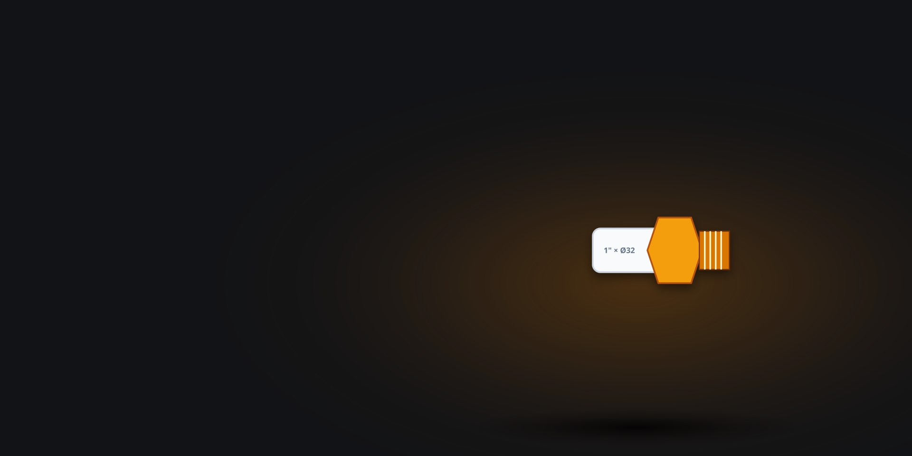
Pirinç Metal Geçişler
MS 58 Masif Pirinç
•
Kanal Kilitli Enjeksiyon
•
150 mm Batarya Şablonu
Fiyat & Stok Sor
PVC Atık Su & Gider
Tip 2 / 3.2 mm Ağır Seri
•
Dudaklı Conta Sızdırmazlık
•
Ø50 - Ø200 mm
Fiyat & Stok Sor
5 Katmanlı EVOH PE-RT
DIN 4726 Oksijen Bariyeri
•
Pirinç Debili Kollektör
•
16×2.0 mm • 50 Yıl Ömür
Fiyat & Stok Sor
PPRC & Ankastre Vanalar
Tam Geçişli Pirinç Küre
•
Gizli Krom Banyo Vanası
•
DIN EN 13828 • PN25
Fiyat & Stok Sor
Formül Plastik Departmanı
Geçmek istediğiniz ürün grubunu seçin
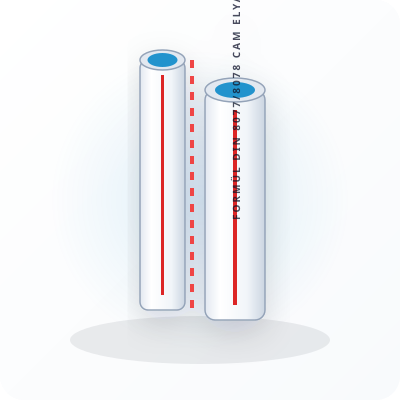
Formül Cam Elyaf Takviyeli Kompozit Boru (PN20 / SDR 7.4)
........................................
Cam Elyaf Kompozit
Orta katmanındaki özel cam elyaf takviyeli PPRC kompozit yapısı sayesinde standart borulara göre %75 daha az termal genleşme gösterir. Sıcak su ve kalorifer hatlarında sarkma yapmaz, tıraşlama gerektirmeden direkt füzyon kaynağı yapılır.
Standart: DIN 8077/8078•PN20 / SDR 7.4•Ø20 - Ø110 mm•4 Metre Boy
Teknik Detay

Formül Cam Elyaf Takviyeli Kompozit Boru (PN25 / SDR 6)
........................................
Cam Elyaf Kompozit
Ağır hizmet ve yüksek katlı binaların ana kolon ve kazan dairesi hatları için geliştirilmiş kalın etli (SDR 6) PN25 kompozit boru. Hidrofor darbelerine ve yüksek sıcaklık dalgalanmalarına maksimum direnç gösterir.
Standart: DIN 8077/8078•PN25 / SDR 6•Ø20 - Ø110 mm•Yüksek Katlı Kolon Hatları
Teknik Detay

Formül Standart Düz PPRC Tesisat Borusu (PN20 / SDR 6)
........................................
Düz PPRC Boru
Klasik sıcak ve soğuk sıhhi tesisat hatları için saf Tip-3 PPRC hammaddeden üretilmiş, yüksek et kalınlığına sahip PN20 tesisat borusu. Sıva altı banyo ve mutfak dağıtımlarında 50 yıl korozyonsuz kullanım sağlar.
Standart: DIN 8077/8078•PN20 / SDR 6•Ø20 - Ø110 mm•Sıva Altı & Sıva Üstü
Teknik Detay
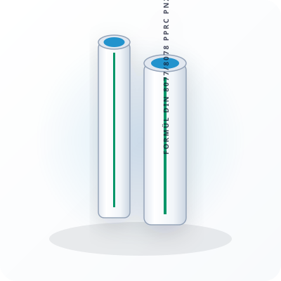
Formül Soğuk Su PPRC Tesisat Borusu (PN16 / SDR 7.4)
........................................
Düz PPRC Boru
Bina içi soğuk su dağıtım hatları, bahçe sulama ve kuyu suyu tesisatları için optimize edilmiş, hafif ve ekonomik PN16 PPRC boru.
Standart: DIN 8077/8078•PN16 / SDR 7.4•Ø20 - Ø63 mm•Soğuk Su Hatları
Teknik Detay

Formül Alüminyum Folyolu Düz Tesisat Borusu (PN25)
........................................
Alüminyum Folyolu
Isıtma sistemlerinde oksijen difüzyonunu sıfıra indiren ve radyatör peteklerinin korozyonunu önleyen, alüminyum folyo kaplamalı yüksek sıcaklık PN25 borusu.
Standart: DIN 8077/8078•DIN 4726 O2 Bariyeri•PN25•Isıtma Hatları
Teknik Detay
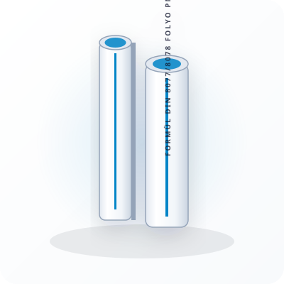
Formül Alüminyum Folyolu Delikli (Perfore) Boru (PN25)
........................................
Alüminyum Folyolu
Mikro delikli (perfore) alüminyum folyo katmanı sayesinde katmanlar arasında gaz sıkışması ve kabarmayı önleyen, yüksek mukavemetli kalorifer ve sıcak su borusu.
Standart: DIN 8077/8078•Perfore Folyo•PN25•Kabarma Önleyici Zırh
Teknik Detay
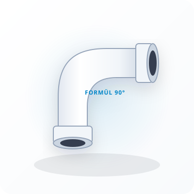
Formül PPRC 90° Füzyon Dirsek
........................................
Dirsekler 90°/45°
Tesisat dönüşlerinde sürtünme kaybını en aza indiren hidrolik iç kavise sahip, yüksek et kalınlıklı 90° soket kaynak dirseği.
Standart: DIN 16962•PN25•Ø20 - Ø110 mm•Pürüzsüz İç Akış
Teknik Detay
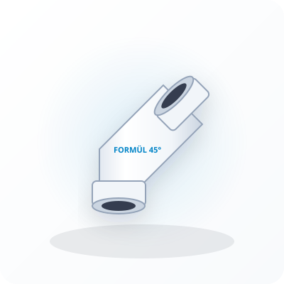
Formül PPRC 45° Füzyon Dirsek
........................................
Dirsekler 90°/45°
Tesisat şaftlarında ve tavan geçişlerinde yumuşak hat dönüşleri sağlayarak su koçu darbesini engelleyen 45° açılı füzyon dirsek.
Standart: DIN 16962•PN25•Ø20 - Ø75 mm•Yumuşak Dönüş
Teknik Detay

Formül PPRC Eşit Te
........................................
Te Grubu
Ana boru hattından aynı çapta hat ayrımı yapmak için kullanılan, yüksek basınca dayanıklı monolitik üç kollu eşit te parçası.
Standart: DIN 16962•PN25•Ø20 - Ø110 mm•Eşit Çap Ayrımı
Teknik Detay
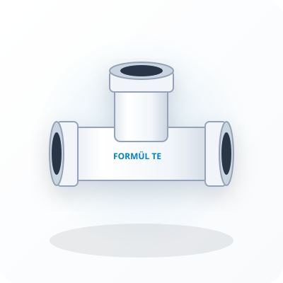
Formül PPRC İnegal (Redüksiyonlu) Te
........................................
Te Grubu
Ana kolon hattından daha küçük çaptaki kat veya daire branşmanlarını redüksiyon parçası kullanmadan tek gövdede ayıran inegal te parçası.
Standart: DIN 16962•PN25•Tek Parça Branşman•İşçilik Tasarrufu
Teknik Detay
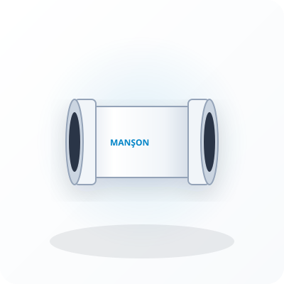
Formül PPRC Düz Manşon
........................................
Manşon & Redüksiyon
İki PPRC boruyu düz hat doğrultusunda eksenel olarak birleştiren, iç dayama faturalı füzyon manşonu.
Standart: DIN 16962•PN25•Ø20 - Ø110 mm•İç Faturalı
Teknik Detay

Formül PPRC Redüksiyon
........................................
Manşon & Redüksiyon
Farklı çaptaki iki PPRC borunun birbirine geçişini sağlayan iç/dış konik füzyon redüksiyon parçası.
Standart: DIN 16962•PN25•Geniş Çap Aralığı•Konik Geçiş
Teknik Detay

Formül PPRC Kavisli Boru / Geçme Parçası
........................................
Kavis & Köprü
Tesisat montajında kolon ve kiriş çıkıntılarını aşmak için kullanılan hazır kavisli PPRC boru parçası.
Standart: TS EN ISO 15874•PN25•Ø20 - Ø32 mm•Kiriş Aşma Kavisli
Teknik Detay
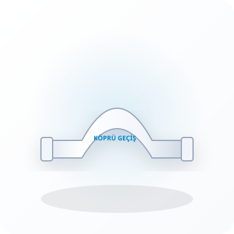
Formül PPRC Köprü Geçiş Parçası (Manşonlu / Düz)
........................................
Kavis & Köprü
Sıcak ve soğuk su borularının aynı düzlemde birbiri üzerinden çakışmadan geçmesini sağlayan entegre kavisli köprü geçiş elemanı.
Standart: DIN 16962•PN25•Ø20 - Ø32 mm•Çapraz Hat Geçişi
Teknik Detay

Formül PPRC Füzyon Kapama Başlığı (Kör Tapa)
........................................
Manşon & Redüksiyon
Tesisat hatlarının sonlandırılması veya test aşamasında hatların kapatılması için kullanılan monolitik füzyon kaynak kör tapası.
Standart: DIN 16962•PN25•Ø20 - Ø110 mm•Monolitik Sonlandırma
Teknik Detay

Formül PPRC Flanş Adaptörü (Yaka)
........................................
Manşon & Redüksiyon
Büyük çaplı PPRC boruların döküm veya çelik flanşlı vanalara, sayaçlara ve hidrofor kolektörlerine bağlanmasını sağlayan faturalı flanş adaptörü.
Standart: DIN 16962•DN32 - DN100•Flanşlı Vana Geçişi•Kazan Dairesi & Hidrofor
Teknik Detay

Formül PPRC İç Dişli Rakor (Pirinç)
........................................
İç Dişli Rakor & Nipel
PPRC boruyu dişli çelik borulara, vanalara veya metal armatürlere bağlayan, yüksek tork dirençli MS 58 pirinç gövdeli iç dişli geçiş rakoru.
MS 58 Avrupa Pirinç•Ø20×1/2" - Ø63×2"•Kanal Kilitli Enjeksiyon•Sıfır Dönme Riski
Teknik Detay

Formül PPRC Dış Dişli Rakor (Pirinç)
........................................
Dış Dişli Rakor & Nipel
Metal armatürler, sayaçlar ve pirinç vanaların doğrudan bağlantısı için kullanılan, altıgen anahtar ağızlı dış dişli pirinç geçiş rakoru.
MS 58 Pirinç•Ø20×1/2" - Ø63×2"•Altıgen Anahtar Ağızlı•PN25
Teknik Detay
Formül PPRC İç Dişli Dirsek (Pirinç)
........................................
İç Dişli Rakor & Nipel
Musluk, lavabo bataryası ve duş ara musluklarının sıva altı köşe bağlantısında kullanılan 90° iç dişli pirinç dirsek.
MS 58 Pirinç•Ø20×1/2" & Ø25×1/2"•Sıva Altı Batarya Ucu•PN25
Teknik Detay

Formül PPRC Dış Dişli Dirsek (Pirinç)
........................................
Dış Dişli Rakor & Nipel
Kombi altı bağlantıları, radyatör girişleri ve vanaların 90° açılı dış dişli montajı için üretilmiş pirinç dirsek.
MS 58 Pirinç•Ø20×1/2" - Ø32×1"•Radyatör & Kombi Girişi•PN25
Teknik Detay

Formül PPRC İç Dişli Te (Pirinç)
........................................
İç Dişli Rakor & Nipel
PPRC hat üzerinden basınç göstergesi (manometre), sensör, tahliye musluğu veya ara bağlantı almak için kullanılan pirinç dişli te parçası.
MS 58 Pirinç•Ø20 - Ø32 mm Te•Manometre & Branşman•PN25
Teknik Detay

Formül PPRC Dış Dişli Te (Pirinç)
........................................
Dış Dişli Rakor & Nipel
PPRC boru hattından dış dişli metal vana veya esnek fleks bağlantısı almak için tasarlanmış pirinç dişli te parçası.
MS 58 Pirinç•Ø20×1/2" & Ø25×3/4"•Fleks & Vana Çıkışı•PN25
Teknik Detay
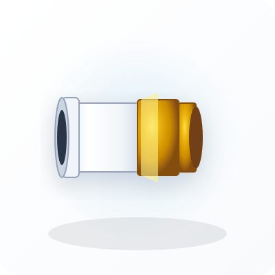
Formül PPRC Oynar Başlıklı İç Dişli Rakor (Pirinç)
........................................
Oynar Başlı Rakor
Pompa, su sayacı ve boyler bağlantılarında boruyu döndürmeden kolay sökülüp takılmayı sağlayan contalı oynar başlı iç dişli rakor.
Oynar Başlı Somun•EPDM Düz Conta•Ø20×1/2" - Ø63×2"•Kolay Demontaj
Teknik Detay

Formül PPRC Oynar Başlıklı Dış Dişli Rakor (Pirinç)
........................................
Oynar Başlı Rakor
Kolektör girişleri ve hidrofor çıkışlarında boruyu çevirmeden pratik montaj sağlayan dış dişli oynar başlı pirinç rakor.
Dış Dişli Oynar Baş•MS 58 Pirinç•Ø20 - Ø50 mm•Kollektör & Hidrofor
Teknik Detay
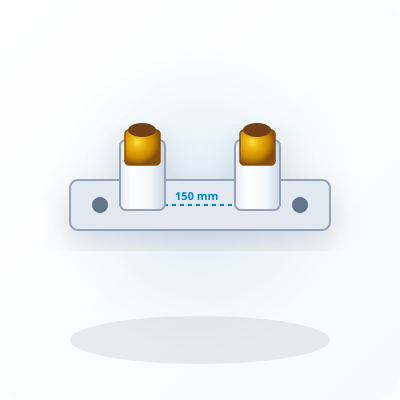
Formül PPRC Çiftli Batarya Bağlantı Şablonu (150 mm)
........................................
Batarya Bağlantı Şablonu
Banyo ve duş bataryalarının duvara montajında 150 mm standart aks mesafesini ve terazi eksenini milimetrik sabitleyen galvaniz sac gövdeli çiftli batarya şablonu.
150 mm Sabit Aks•Galvaniz Sac Şasi•Terazi & Eksen Garantisi•Sıva Altı Duş Bataryası
Teknik Detay

Formül PPRC Tekli Taharet & Batarya Bağlantısı (Kulaklı)
........................................
Batarya Bağlantı Şablonu
Tekli musluk, taharet musluğu ve çamaşır makinesi musluk çıkışlarının duvara sağlam vidalanmasını sağlayan montaj kulaklı PPRC pirinç dirsek.
3 Vidalı Montaj Kulağı•Ø20×1/2"•Taharet Musluğu•Sıva Altı Rijit
Teknik Detay
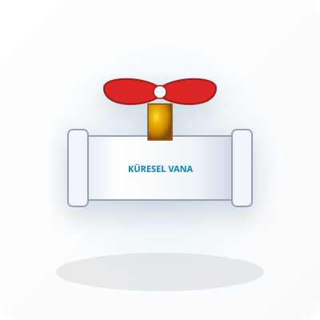
Formül PPRC Tam Geçişli Küresel Vana
........................................
PPRC Küresel Vana
Sıcak ve soğuk su hatlarında tam akış kesme sağlayan, teflon (PTFE) yataklı pirinç küreli, korozyon yapmayan PPRC gövdeli küresel vana.
Tam Geçişli Küre•PTFE Teflon Yatak•Ø20 - Ø75 mm•DIN EN 13828
Teknik Detay
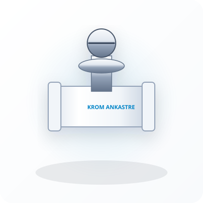
Formül PPRC Gizli Krom Ankastre Banyo Vanası
........................................
Gizli Krom Ankastre Vana
Banyo ve ıslak hacimlerde sıva altına gömülen, estetik krom kaplama metal açma-kapama volanı ve rozetine sahip şık ankastre vana.
Krom Metal Volan•Teleskopik Ayar Rozeti•Ø20 - Ø32 mm•Sıva Altı Lüks Seri
Teknik Detay

Formül PPRC Kelebek Kollu Küresel Vana
........................................
PPRC Küresel Vana
Kollektör dolapları, lavabo altları ve dar montaj alanlarında açma-kapama kolaylığı sağlayan ergonomik kelebek kollu küresel vana.
Kelebek Kol•Kollektör Dolabı Uyumlu•Ø20 - Ø32 mm•Kompakt
Teknik Detay
Formül PPRC Köşe Radyatör Vanası
........................................
Radyatör & Termostatik
Radyatör peteklerinin alt/üst köşe bağlantısı için PPRC boruya doğrudan füzyon kaynağı yapılan, 1/2" rakorlu pirinç mekanizmalı köşe vana.
Köşe Tip•1/2" Pirinç Rakor•Ø20×1/2"•Direkt Füzyon
Teknik Detay
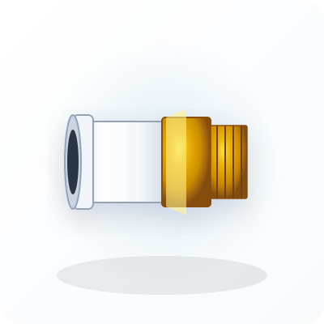
Formül PPRC Düz Radyatör Vanası
........................................
Radyatör & Termostatik
Zeminden veya süpürgelikten gelen kalorifer borularının radyatöre düz doğrultuda bağlanması için üretilmiş düz tip PPRC radyatör vanası.
Düz Tip•1/2" Pirinç Rakor•Ø20×1/2"•Zemin Girişli
Teknik Detay

Formül PPRC Yaylı Çekvalf
........................................
Çekvalf & Filtre
Suyun sadece tek bir yönde akmasına izin veren, hidrofor geri basmalarını ve su sayacı geri dönüşlerini önleyen paslanmaz yaylı PPRC çekvalf.
Paslanmaz Yay•Geri Akış Önleyici•Ø20 - Ø63 mm•PN25
Teknik Detay
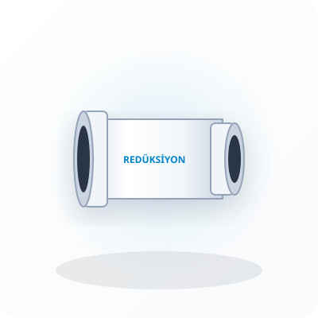
Formül PPRC Filtre & Pislik Tutucu (Y Tipi)
........................................
Çekvalf & Filtre
Şebekeden gelen kum, pas ve tortuları tutarak sayaç, batarya ve kombi eşanjörünü koruyan, temizlenebilir paslanmaz çelik filtreli Y tipi PPRC pislik tutucu.
Paslanmaz Çelik Filtre•Vidalı Temizleme Kapağı•Ø20 - Ø50 mm•Kombi & Sayaç Koruması
Teknik Detay

Formül Contalı PVC Atık Su Borusu (Tip 2 / Ağır Seri 3.2 mm)
........................................
Contalı PVC Boru
Bina içi ana düşey atık su kolonları ve zemin altı yatay hatlar için üretilmiş, 3.2 mm et kalınlığında, contalı sessiz ve mukavim PVC atık su borusu.
Tip 2 / 3.2 mm Et•TS EN 1329-1•Ø50 - Ø200 mm•Dudaklı Elastomer Conta
Teknik Detay

Formül Contalı PVC Atık Su Borusu (Tip 1 / Hafif Seri)
........................................
Contalı PVC Boru
Kat içi lavabo, süzgeç ve banyo yatay bağlantılarında kullanılan hafif ve ekonomik contalı PVC atık su borusu.
Tip 1 Hafif Seri•TS EN 1329-1•Ø50 - Ø110 mm•Kat İçi Yatay Hat
Teknik Detay
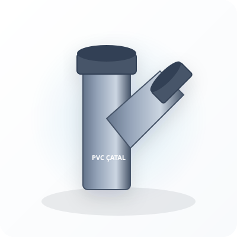
Formül PVC 45° Tek Çatal
........................................
Çatallar & Dirsekler
Düşey veya yatay atık su hattına 45 derecelik açıyla yan branşman bağlamak için kullanılan sızdırmaz contalı PVC tek çatal.
45° Yan Branşman•TS EN 1329-1•Ø50 - Ø160 mm•Contalı
Teknik Detay

Formül PVC 45° Çift Çatal
........................................
Çatallar & Dirsekler
Ana atık su kolonuna sağdan ve soldan iki ayrı daire veya banyo giderinin aynı seviyede bağlanmasını sağlayan 45° çift çatal.
Çift Branşman•110 mm Ana Kolon•Simetrik Daire Bağlantısı•TS EN 1329-1
Teknik Detay

Formül PVC 87.5° Kapalı Dirsek
........................................
Çatallar & Dirsekler
Klozet, tuvalet taşı ve dikey kolon inişlerinde 90 dereceye yakın dik açılı dönüş sağlayan sızdırmaz contalı PVC kapalı dirsek.
87.5° Eğimli Açılı•Klozet & Kolon Tabanı•Ø50 - Ø160 mm•TS EN 1329-1
Teknik Detay
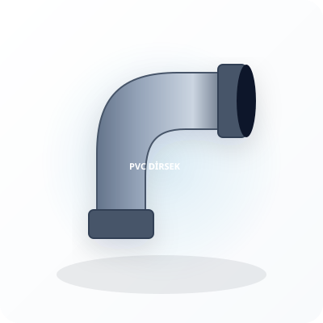
Formül PVC 45° Açık Dirsek
........................................
Çatallar & Dirsekler
Ana kolon şaftlarında kolon kaçıklıklarını geçmek ve yatay hatlarda akıcı dönüşler oluşturmak için kullanılan 45° contalı PVC dirsek.
45° Açık Dirsek•Akıcı Dönüş•Ø50 - Ø200 mm•TS EN 1329-1
Teknik Detay
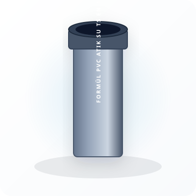
Formül PVC Atık Su Redüksiyonu (Eksantrik)
........................................
Temizleme & Sifon Parçası
Büyük çaplı PVC boru veya çatal ağzına daha küçük çaplı borunun bağlanmasını sağlayan, alt tabanı düz eksantrik tip PVC redüksiyon.
Eksantrik Düz Taban•Tortu Birikmez•Ø75/50 - Ø200/160 mm•TS EN 1329-1
Teknik Detay

Formül PVC Vidalı Temizleme (Revizyon) Parçası
........................................
Temizleme & Sifon Parçası
Atık su kolonlarının tabanında veya yatay ana hatlarda tıkanıklık anında tesisatı sökmeden kanal açma sustası sokulmasını sağlayan contalı vidalı temizleme parçası.
Vidalı Geniş Kapak•Kanal Açma Girişi•Ø50 - Ø160 mm•Tıkanıklık Müdahale
Teknik Detay

Formül 5 Katmanlı EVOH Oksijen Bariyerli PE-RT Boru (16×2.0 mm)
........................................
PE-RT Oksijen Bariyerli
Zeminden ısıtma sistemlerinde oksijen difüzyonunu sıfırlayan 5 katmanlı EVOH zırhlı, son derece esnek, çatlama ve kırılma yapmayan 16×2.0 mm PE-RT boru.
5 Katmanlı EVOH Zırh•DIN 4726 O2 Geçirimsiz•16×2.0 mm•Yüksek Esneklik
Teknik Detay
Formül Standart PE-RT Yerden Isıtma Borusu (16×2.0 mm)
........................................
PE-RT Oksijen Bariyerli
Zemin ısıtma ve radyatör mobil dağıtım hatlarında yüksek esneklik ve ekonomik maliyet sunan saf PE-RT Type II tesisat borusu.
PE-RT Type II•16×2.0 mm•Mobil Radyatör Dağıtımı•Ekonomik
Teknik Detay

Formül Pirinç Gövdeli Debi Ayarlı Kollektör (1" - 2-12 Ağızlı)
........................................
Pirinç Kollektör & Debi Ayarlı
Yerden ısıtma sistemlerinde her odanın devresine giden su miktarını üzerindeki göstergeli debimetrelerle hassas olarak dengeleyen masif pirinç debili kollektör seti.
Cam Tüplü Debimetre•Masif MS 58 Pirinç Gövde•2 - 12 Ağızlı•Oda Isı Dengeleme
Teknik Detay
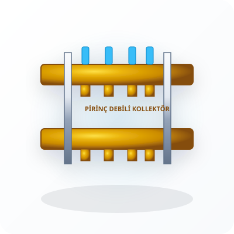
Formül Gömme Ankastre Kollektör Dolabı (Sac Elektrostatik)
........................................
Kollektör Dolabı & Aksesuar
Yerden ısıtma ve kalorifer kollektörlerini duvar içerisine gizleyen, derinlik ve yükseklik ayarlı, beyaz elektrostatik toz boyalı saç kollektör dolabı.
Elektrostatik Boya•Kilitli Kapak•40 / 60 / 80 / 100 cm•Teleskopik Ayar
Teknik Detay
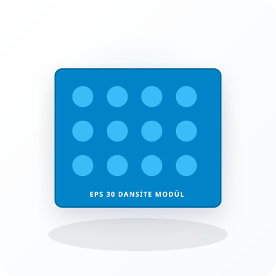
Formül Mantar Başlıklı Yerden Isıtma İzolasyon Modülü (EPS 30 Dansite)
........................................
İzolasyon Modülü
Alt kata ısı kaçışını engelleyen ve 16 mm PE-RT boruların 5 ve 10 cm katlarında kilitli döşenmesini sağlayan, film kaplamalı yüksek dansiteli EPS zemin straforu.
EPS 30 Dansite•HIPS Film Kaplama•Mantar Başlıklı Kilit•Yüksek Isı Yalıtımı
Teknik Detay

Formül PE-RT Boru Bağlantı & Eurokonus Rakoru (16×2.0 mm - 3/4")
........................................
Pirinç Kollektör & Debi Ayarlı
16×2.0 mm PE-RT boruyu debili pirinç kollektör ağızlarına sızdırmaz şekilde kilitleyen pirinç yüksüklü Eurokonus bağlantı rakoru.
3/4" Eurokonus•16×2.0 mm Uyumlu•Pirinç Sıkma Yüksüğü•DIN EN 16313
Teknik Detay